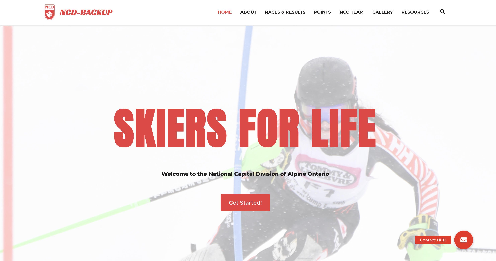
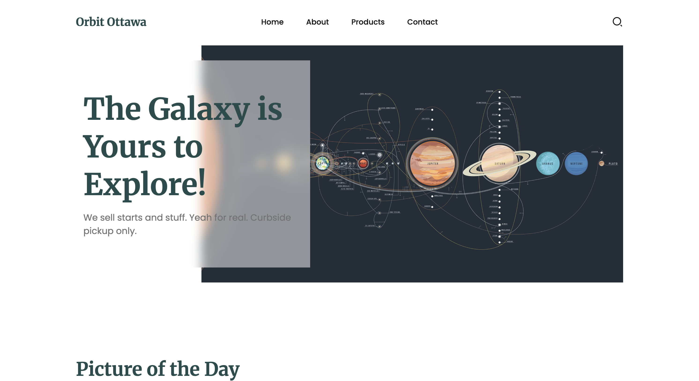

01 · GUI / UX
Interface & Human-Centred Design
GUI / UI DesignHuman-centred DesignHCI PrinciplesInteraction & BehaviourWireframingUsability & AccessibilityUI Requirements
GUI / UX DESIGN · FRONT-END
GUI / UX designer and front-end developer creating clear, user-centred interfaces through interaction design, responsive UI and practical implementation.
ABOUT
I combine user-centred design thinking, visual communication and front-end implementation to create interfaces that are clear, usable and consistent.
My background in Interactive Media Design has given me hands-on experience with responsive web design, wireframing, prototyping, interface design and digital content. I enjoy turning requirements and user needs into structured experiences, then refining them through iteration and implementation.
I am especially interested in GUI / UX work where information hierarchy, interaction behaviour, usability and collaboration with developers are central to the product experience.
Prioritize information so users can understand what matters and act with confidence.
Move from structure and wireframes to refined UI while validating decisions.
Design with responsive behaviour, implementation and developer handoff in mind.
CAPABILITIES
A focused toolkit aligned with GUI / UX, prototyping and front-end delivery.
01 · GUI / UX
02 · PROTOTYPING
03 · IMPLEMENTATION
SELECTED WORK
Selected work demonstrating research, UI decisions, responsive design and front-end execution.

View project ↗01 · FEATURED PROJECT
Translated stakeholder needs into a clearer responsive website structure, refining information architecture, navigation, interface hierarchy and front-end behaviour from concept to implementation.

View live ↗02
A responsive web interface focused on visual hierarchy, content structure and consistent interaction across screen sizes.
View live project ↗03
A mobile-first ordering experience exploring visual hierarchy, accessible controls and clear task progression.
View live project ↗04
A responsive outdoor e-commerce experience designed around clear product discovery, visual hierarchy and consistent shopping interactions across screen sizes.
View live store ↗